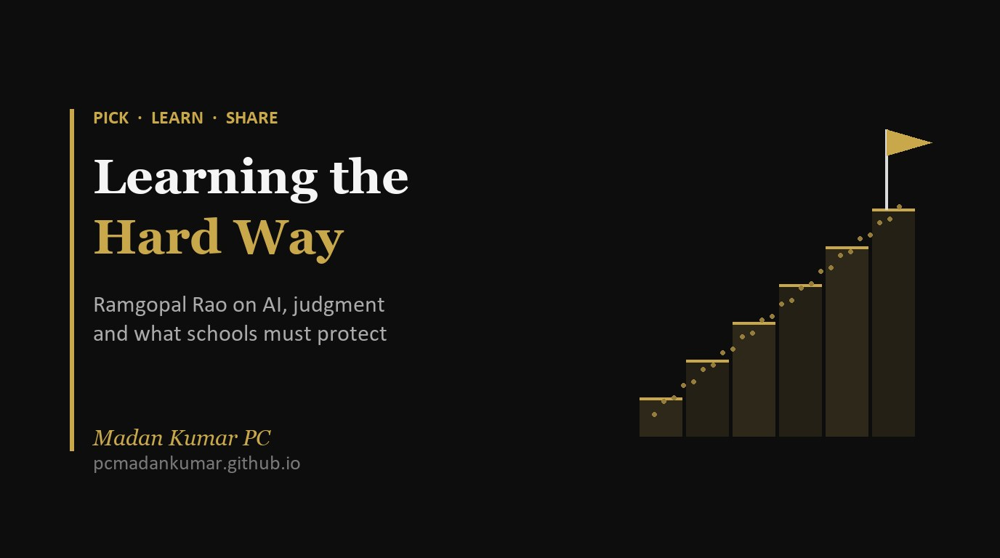

Learning the Hard Way: Ramgopal Rao on AI, Judgment and What Schools Must Protect

A former IIT Director on why AI speeds up experts but can mislead beginners, and what that means for marking, teacher training and students.
Yesterday I wrote about Gita Gopinath’s warning on cognitive surrender [2]. Today a very different voice makes almost the same point, from inside a university.
Professor V. Ramgopal Rao was Director of IIT Delhi and is now Vice Chancellor of BITS Pilani. In a long conversation on the Professor Mahesh Podcast from IIT Madras [1], he was asked a simple question: is college still relevant in the AI era? His answer is yes, but not the way most colleges, or schools, run today.
What makes him worth listening to is that he is not against AI. He uses it every day. He has trained AI agents on his own writing and on his 500-plus research papers, and he says work that took him days now takes hours. His worry is about the people who do not have that body of work behind them yet: our students.
Why the same tool helps him and can hurt a student
His argument is simple. The agents work for him because he gives them something real: decades of his own papers and views, built the hard way, from literature reviews, lab work and failure. So the tool extends his thinking.
A student starting out has none of that. The tool “seems to know everything” and “sounds wise”, he says, but it can hallucinate, misjudge, and “completely mislead you, take you in a direction which you don’t even want to go” [1]. Without something of your own to judge it against, you cannot tell when it is wrong, or when it is right but not the best answer.
He also named something I recognise from our own classrooms. “Indian students… we are very bad at questioning,” he said; we don’t even question the teacher [1]. If a student will not question a teacher, they are unlikely to question a confident machine.
Zero marks for one prompt
His clearest example is about an assignment. One student pastes the question into a chatbot and submits what comes out. Another treats the first answer as a starting point, gathers material from other sources, finds where it contradicts the tool, and reaches a final answer after “10 different prompts”. Both used AI. His verdict: if the second student gets 100 out of 100, the first should get zero [1].
“The process that you have followed to arrive at the right answer, that process is what should get the marks,” he said [1]. For anyone who sets assessments, that is the line to keep.
What BITS Pilani is changing
He was honest that no university has worked out how to bring AI into student life yet. Part of the reason is cost: basic access to paid tools for a campus like IIT Madras’s 15,000 students would be “minimum half a million dollars” [1]. Here is what he says BITS has started instead:
- Self-learning credits. Part of the curriculum (“let’s say 15%”) is learnt on your own, from curated material and open-access AI models, with an exam at the end.
- Projects that replace courses. Students can earn credit through undergraduate research projects instead of some courses. Real problems, such as water wastage or pesticide overuse on farms, are funded at two lakh rupees each, and teams mix year groups and disciplines.
- Physical wellness, social skills and mental wellness in the curriculum. Students must play a team sport to pass the first-year module. A social skills course helps them handle the diversity of a large campus.
- An “AI plus” campus at Amaravati. AI sits at the centre, and civil, mechanical or biology become minors where each student applies AI to two real problems. He was frank about why this needs a new campus: in an old institution “you cannot subtract anything. You can only add things” [1].
Teachers first
The part I want every school leader to hear is this. Before giving students paid access to AI tools, he said, “the first thing you need to do is give teachers paid access to all these tools” [1]. Teachers have to experiment first, find where the tools fail, and only then can they show students how to use them well. As he put it, “as teachers we have been taught the same way” [1]. Nobody becomes a practice-based teacher overnight.
It is the same reason my AI for Educators sessions start with teachers using the tools on their own subject, before we talk about rules for students.
Depth still takes years
His career advice is blunt. A bachelor’s degree makes you a generalist, and generalist knowledge is exactly what AI does well. To question the tool in a specialised area you need depth, and that usually comes from a master’s or a PhD. “Less than 5% of students are going for higher education” at IITs, he said, and he sees that as a problem for the country [1].
He also wants the PhD to stop being only a path to becoming a professor. BITS now runs five kinds of PhD, including tracks for starting a company, for working across two departments, and for solving an industry problem. When it offered 20 entrepreneurship PhD places with a higher stipend and prototype funding, 1,300 people applied [1].
On jobs, he did not soften it: where 100 coders were needed, 30 can now do the work, so entry-level hiring has slowed. New roles will appear, such as drone operators and drone repair, but one thing is certain: “You would not hire anybody who has no idea what these tools are, who has no idea how to use them effectively for their particular job” [1].
And his advice to his 22-year-old self is the one I will share with every Grade 11 student. He studied in Telugu medium in rural Telangana and did not discover his love of research until his master’s project became a published paper. Students who arrive with their job and salary already decided, he said, never discover what they are good at. “Closed minds are like closed parachutes” [1].
What I am taking into school
Three changes I would like every department to try:
- Mark the process, not just the product. Ask for drafts, sources, the prompts used and what the student changed. A one-prompt answer should earn little, however polished it looks.
- Train teachers on AI before setting student rules. Let each department test the tools on its own syllabus and collect the mistakes they find. Those mistakes make the best lesson on judgment.
- Make students build something. An app, a circuit, a survey, a short film. Rao’s line is that building gives a confidence that exam marks alone do not.
He summed up the whole conversation for me without meaning to: AI can make an expert ten times faster, but it cannot make a beginner an expert. That still takes the hard way.
How is your school assessing the process behind AI-assisted work? I would love to hear on LinkedIn.
References
- Rao, V. R., in conversation with Mahesh Panchagnula (5 November 2026). Is College Still Relevant in the AI Era? The Professor Mahesh Podcast, Episode 78, Centre for Outreach and Digital Education, IIT Madras. YouTube. https://www.youtube.com/watch?v=L-1qv8bin2E. Quotations are taken from the episode.
- Madan Kumar PC (10 November 2026). The Great Gamble, and the Quieter One in Our Classrooms. https://pcmadankumar.github.io/blog/posts/the-great-gamble-gita-gopinath.html
Numbers in square brackets point to the references above. Figures about BITS Pilani and IIT are Professor Rao’s, as given in the episode.